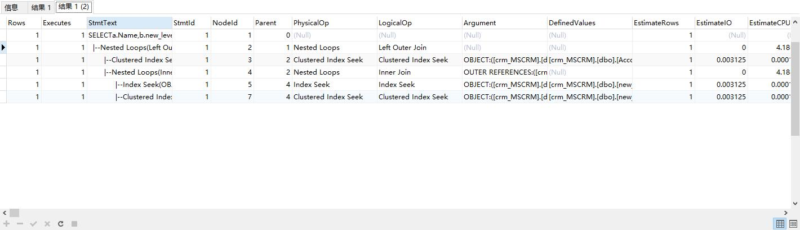
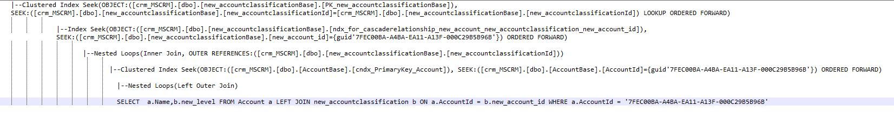

<!DOCTYPE html>


<html lang="ch">


<head>
  <meta charset="utf-8" />
   
  <meta name="keywords" content="life" />
   
  <meta name="description" content="blog for LiMingHua" />
  
  <meta name="viewport" content="width=device-width, initial-scale=1, maximum-scale=1" />
  <title>
    SQL调优 |  岛
  </title>
  <meta name="generator" content="hexo-theme-ayer">
  
  <link rel="shortcut icon" href="/favicon.ico" />
  
  
<link rel="stylesheet" href="/dist/main.css">

  
<link rel="stylesheet" href="https://cdn.jsdelivr.net/gh/Shen-Yu/cdn/css/remixicon.min.css">

  
<link rel="stylesheet" href="/css/custom.css">

  
  
<script src="https://cdn.jsdelivr.net/npm/pace-js@1.0.2/pace.min.js"></script>

  
  

  

</head>

</html>

<body>
  <div id="app">
    <main class="content on">
      <section class="outer">
  <article id="post-SQL调优" class="article article-type-post" itemscope
  itemprop="blogPost" data-scroll-reveal>

  <div class="article-inner">
    
    <header class="article-header">
       
<h1 class="article-title sea-center" style="border-left:0" itemprop="name">
  SQL调优
</h1>
 

    </header>
    

    
    <div class="article-meta">
      <a href="/2020/10/21/SQL%E8%B0%83%E4%BC%98/" class="article-date">
  <time datetime="2020-10-21T07:05:24.000Z" itemprop="datePublished">2020-10-21</time>
</a>
      
  <div class="article-category">
    <a class="article-category-link" href="/categories/%E6%8A%80%E6%9C%AF/">技术</a>
  </div>

      
      
<div class="word_count">
    <span class="post-time">
        <span class="post-meta-item-icon">
            <i class="ri-quill-pen-line"></i>
            <span class="post-meta-item-text"> Word count:</span>
            <span class="post-count">2k</span>
        </span>
    </span>

    <span class="post-time">
        &nbsp; | &nbsp;
        <span class="post-meta-item-icon">
            <i class="ri-book-open-line"></i>
            <span class="post-meta-item-text"> Reading time≈</span>
            <span class="post-count">7 min</span>
        </span>
    </span>
</div>

      
    </div>
    

    
    
    <div class="tocbot"></div>


    

    
    <div class="article-entry" itemprop="articleBody">
      
      

      
      <h1 id="SET-STATISTICS-XX-ON"><a href="#SET-STATISTICS-XX-ON" class="headerlink" title="SET STATISTICS XX ON"></a>SET STATISTICS XX ON</h1><blockquote>
<p>收集语句运行的统计信息</p>
</blockquote>
<h1 id="SET-STATISTICS-TIME-ON"><a href="#SET-STATISTICS-TIME-ON" class="headerlink" title="SET STATISTICS TIME ON"></a>SET STATISTICS TIME ON</h1><blockquote>
<p>输出语句做的物理读和逻辑读的数目</p>
</blockquote>
<figure class="highlight sql"><table><tr><td class="gutter"><pre><span class="line">1</span><br><span class="line">2</span><br><span class="line">3</span><br><span class="line">4</span><br><span class="line">5</span><br><span class="line">6</span><br><span class="line">7</span><br><span class="line">8</span><br><span class="line">9</span><br><span class="line">10</span><br><span class="line">11</span><br><span class="line">12</span><br><span class="line">13</span><br><span class="line">14</span><br><span class="line">15</span><br><span class="line">16</span><br><span class="line">17</span><br></pre></td><td class="code"><pre><span class="line">DBCC DROPCLEANBUFFERS</span><br><span class="line"><span class="comment">--清除buffer pool里的所有缓存数据</span></span><br><span class="line">DBCC FREEPROCCACHE</span><br><span class="line">GO</span><br><span class="line"><span class="comment">--清除buffer pool里的所有缓存的执行计划</span></span><br><span class="line"><span class="keyword">SET</span> <span class="keyword">STATISTICS</span> <span class="built_in">TIME</span> <span class="keyword">ON</span>;</span><br><span class="line"></span><br><span class="line"><span class="keyword">SELECT</span></span><br><span class="line">	a.Name,</span><br><span class="line">	b.new_level </span><br><span class="line"><span class="keyword">FROM</span></span><br><span class="line">	<span class="keyword">Account</span> a</span><br><span class="line">	<span class="keyword">LEFT</span> <span class="keyword">JOIN</span> new_accountclassification b <span class="keyword">ON</span> a.AccountId = b.new_account_id </span><br><span class="line"><span class="keyword">WHERE</span></span><br><span class="line">	a.AccountId = <span class="string">'7FEC00BA-A4BA-EA11-A13F-000C29B5B96B'</span></span><br><span class="line"></span><br><span class="line"><span class="keyword">SET</span> <span class="keyword">STATISTICS</span> <span class="built_in">TIME</span> <span class="keyword">OFF</span></span><br></pre></td></tr></table></figure>

<p>执行上面代码获取以下信息：</p>
<figure class="highlight sql"><table><tr><td class="gutter"><pre><span class="line">1</span><br><span class="line">2</span><br><span class="line">3</span><br><span class="line">4</span><br><span class="line">5</span><br><span class="line">6</span><br><span class="line">7</span><br><span class="line">8</span><br><span class="line">9</span><br><span class="line">10</span><br><span class="line">11</span><br><span class="line">12</span><br><span class="line">13</span><br><span class="line">14</span><br><span class="line">15</span><br><span class="line">16</span><br><span class="line">17</span><br><span class="line">18</span><br><span class="line">19</span><br><span class="line">20</span><br><span class="line">21</span><br><span class="line">22</span><br><span class="line">23</span><br><span class="line">24</span><br><span class="line">25</span><br><span class="line">26</span><br><span class="line">27</span><br><span class="line">28</span><br><span class="line">29</span><br><span class="line">30</span><br><span class="line">31</span><br><span class="line">32</span><br><span class="line">33</span><br><span class="line">34</span><br><span class="line">35</span><br><span class="line">36</span><br><span class="line">37</span><br><span class="line">38</span><br><span class="line">39</span><br><span class="line">40</span><br><span class="line">41</span><br></pre></td><td class="code"><pre><span class="line"></span><br><span class="line">DBCC DROPCLEANBUFFERS</span><br><span class="line"><span class="comment">--清除buffer pool里的所有缓存数据</span></span><br><span class="line">DBCC FREEPROCCACHE</span><br><span class="line">&gt; SQL Server 分析和编译时间: </span><br><span class="line">   CPU 时间 = 0 毫秒，占用时间 = 0 毫秒。</span><br><span class="line">&gt; DBCC 执行完毕。如果 DBCC 输出了错误信息，请与系统管理员联系。</span><br><span class="line">&gt; </span><br><span class="line"> SQL Server 执行时间:</span><br><span class="line">   CPU 时间 = 328 毫秒，占用时间 = 332 毫秒。</span><br><span class="line">&gt; DBCC 执行完毕。如果 DBCC 输出了错误信息，请与系统管理员联系。</span><br><span class="line">&gt; </span><br><span class="line"> SQL Server 执行时间:</span><br><span class="line">   CPU 时间 = 15 毫秒，占用时间 = 10 毫秒。</span><br><span class="line">&gt; OK</span><br><span class="line">&gt; 时间: 0.35s</span><br><span class="line"></span><br><span class="line"></span><br><span class="line"><span class="comment">--清除buffer pool里的所有缓存的执行计划</span></span><br><span class="line"><span class="keyword">SET</span> <span class="keyword">STATISTICS</span> <span class="built_in">TIME</span> <span class="keyword">ON</span>;</span><br><span class="line"></span><br><span class="line"><span class="keyword">SELECT</span></span><br><span class="line">	a.Name,</span><br><span class="line">	b.new_level </span><br><span class="line"><span class="keyword">FROM</span></span><br><span class="line">	<span class="keyword">Account</span> a</span><br><span class="line">	<span class="keyword">LEFT</span> <span class="keyword">JOIN</span> new_accountclassification b <span class="keyword">ON</span> a.AccountId = b.new_account_id </span><br><span class="line"><span class="keyword">WHERE</span></span><br><span class="line">	a.AccountId = <span class="string">'7FEC00BA-A4BA-EA11-A13F-000C29B5B96B'</span></span><br><span class="line"></span><br><span class="line"><span class="keyword">SET</span> <span class="keyword">STATISTICS</span> <span class="built_in">TIME</span> <span class="keyword">OFF</span></span><br><span class="line">&gt; <span class="keyword">SQL</span> <span class="keyword">Server</span> 分析和编译时间: </span><br><span class="line">   CPU 时间 = <span class="number">203</span> 毫秒，占用时间 = <span class="number">278</span> 毫秒。</span><br><span class="line">&gt; </span><br><span class="line"> <span class="keyword">SQL</span> <span class="keyword">Server</span> 执行时间:</span><br><span class="line">   CPU 时间 = <span class="number">0</span> 毫秒，占用时间 = <span class="number">0</span> 毫秒。</span><br><span class="line">&gt; </span><br><span class="line"> <span class="keyword">SQL</span> <span class="keyword">Server</span> 执行时间:</span><br><span class="line">   CPU 时间 = <span class="number">0</span> 毫秒，占用时间 = <span class="number">5</span> 毫秒。</span><br><span class="line">&gt; OK</span><br><span class="line">&gt; 时间: <span class="number">0.295</span>s</span><br></pre></td></tr></table></figure>

<h2 id="CPU时间"><a href="#CPU时间" class="headerlink" title="CPU时间"></a>CPU时间</h2><blockquote>
<p>这个值的含义指的是在这一步，SQLSERVER所花的纯CPU时间是多少。也就是说，语句花了多少CPU资源。</p>
</blockquote>
<h2 id="占用时间"><a href="#占用时间" class="headerlink" title="占用时间"></a>占用时间</h2><blockquote>
<p>此值指这一步一共用了多少时间。也就是说，这是语句运行的时间长短，有些动作会发生I/O操作，产生了I/O等待，或者是遇到阻塞、产生了阻塞等待。总之时间用掉了，但是没有用CPU资源。所以占用时间比CPU时间长是很正常的 ，但是CPU时间是语句在所有CPU上的时间总和。如果语句使用了多颗CPU，而其他等待几乎没有，那么CPU时间大于占用时间也是正常的。</p>
</blockquote>
<h2 id="分析和编译时间"><a href="#分析和编译时间" class="headerlink" title="分析和编译时间"></a>分析和编译时间</h2><blockquote>
<p>这一步，就是语句的编译时间。由于语句运行之前清空了所有执行计划，SQLSERVER必须要对他编译。这里的编译时间就不为0了。由于编译主要是CPU的运算，所以一般CPU时间和占用时间是差不多的。如果这里相差比较大，就有必要看看SQLSERVER在系统资源上有没有瓶颈了。这里他们是一个15毫秒，一个是104毫秒。</p>
</blockquote>
<h2 id="SQLSERVER执行时间"><a href="#SQLSERVER执行时间" class="headerlink" title="SQLSERVER执行时间"></a>SQLSERVER执行时间</h2><blockquote>
<p>语句真正运行的时间。由于语句是第一次运行，SQLSERVER需要把数据从磁盘读到内存里，这里语句的运行发生了5毫秒的I/O等待。</p>
</blockquote>
<h2 id="关键字go"><a href="#关键字go" class="headerlink" title="关键字go"></a>关键字go</h2><blockquote>
<p>go 向 SQL Server 实用工具发出一批 Transact-SQL 语句结束的信号。<br>例如当某一语句要求必须是查询批次中的第一个语句，则可以在前面加上go来终结上一个批处理，使其成为下一个批处理的开头。<br>CREATE DEFAULT, CREATE FUNCTION, CREATE PROCEDURE, CREATE RULE, CREATE SCHEMA, CREATE TRIGGER, CREATE VIEW </p>
</blockquote>
<h1 id="SET-STATISTICS-IO-ON"><a href="#SET-STATISTICS-IO-ON" class="headerlink" title="SET STATISTICS IO ON"></a>SET STATISTICS IO ON</h1><figure class="highlight sql"><table><tr><td class="gutter"><pre><span class="line">1</span><br><span class="line">2</span><br><span class="line">3</span><br><span class="line">4</span><br><span class="line">5</span><br><span class="line">6</span><br><span class="line">7</span><br><span class="line">8</span><br><span class="line">9</span><br><span class="line">10</span><br><span class="line">11</span><br></pre></td><td class="code"><pre><span class="line"><span class="keyword">SET</span> <span class="keyword">STATISTICS</span> IO <span class="keyword">ON</span>;</span><br><span class="line"></span><br><span class="line"><span class="keyword">SELECT</span></span><br><span class="line">	a.Name,</span><br><span class="line">	b.new_level </span><br><span class="line"><span class="keyword">FROM</span></span><br><span class="line">	<span class="keyword">Account</span> a</span><br><span class="line">	<span class="keyword">LEFT</span> <span class="keyword">JOIN</span> new_accountclassification b <span class="keyword">ON</span> a.AccountId = b.new_account_id </span><br><span class="line"><span class="keyword">WHERE</span></span><br><span class="line">	a.AccountId = <span class="string">'7FEC00BA-A4BA-EA11-A13F-000C29B5B96B'</span></span><br><span class="line"><span class="keyword">SET</span> <span class="keyword">STATISTICS</span> IO <span class="keyword">OFF</span>;</span><br></pre></td></tr></table></figure>
<p>执行上面代码获取以下信息：</p>
<figure class="highlight"><table><tr><td class="gutter"><pre><span class="line">1</span><br><span class="line">2</span><br></pre></td><td class="code"><pre><span class="line">&gt; 表 'new_accountclassificationBase'。扫描计数 1，逻辑读取 6 次，物理读取 0 次，预读 0 次，lob 逻辑读取 0 次，lob 物理读取 0 次，lob 预读 0 次。</span><br><span class="line">&gt; 表 'AccountBase'。扫描计数 0，逻辑读取 4 次，物理读取 0 次，预读 0 次，lob 逻辑读取 0 次，lob 物理读取 0 次，lob 预读 0 次。</span><br></pre></td></tr></table></figure>
<h2 id="表"><a href="#表" class="headerlink" title="表"></a>表</h2><blockquote>
<p>表的名称。</p>
</blockquote>
<h2 id="扫描计数"><a href="#扫描计数" class="headerlink" title="扫描计数"></a>扫描计数</h2><blockquote>
<p>执行的扫描次数。按照执行计划，表格被扫描了几次。一般来讲大表扫描的次数越多越不好。唯一的例外是如果执行计划选择了并发运行，由多个thread线程同时做一个表的读取，每个thread读其中的一部分，但是这里会显示所有thread的数目。也就是有几个thread在并发做，就会有几个扫描。这时数目大一点没问题的。</p>
</blockquote>
<h2 id="逻辑读取"><a href="#逻辑读取" class="headerlink" title="逻辑读取"></a>逻辑读取</h2><blockquote>
<p>从数据缓存读取的页数。页数越多，说明查询要访问的数据量就越大，内存消耗量越大，查询也就越昂贵。可以检查是否应该调整索引，减少扫描的次数，缩小扫描范围。<br>顺便说一下这个逻辑读取的统计原理：为什麽显示出来的结果的单位不是Page，也不是K或KB。SQLSERVER里在做读和写的时候，会运行到某一段特定的代码。每调用一次这个代码，Reads/Write就会加1。所以这个值比较大那语句一定做了比较多的I/O，但是不能通过这个值计算出I/O的绝对数量，这个值反映的是逻辑读写量不是物理读写量。</p>
</blockquote>
<h2 id="物理读取"><a href="#物理读取" class="headerlink" title="物理读取"></a>物理读取</h2><blockquote>
<p>从磁盘读取的页数</p>
</blockquote>
<h2 id="预读"><a href="#预读" class="headerlink" title="预读"></a>预读</h2><blockquote>
<p>为进行查询而预读入缓存的页数</p>
</blockquote>
<h2 id="物理读取-预读"><a href="#物理读取-预读" class="headerlink" title="物理读取+预读"></a>物理读取+预读</h2><blockquote>
<p>就是SQLSERVER为了完成这句查询而从磁盘上读取的页数。如果不为0，说明数据没有缓存在内存里。运行速度一定会受到影响</p>
</blockquote>
<h2 id="LOB逻辑读取"><a href="#LOB逻辑读取" class="headerlink" title="LOB逻辑读取"></a>LOB逻辑读取</h2><blockquote>
<p>从数据缓存读取的text、ntext、image、大值类型（varchar(max)、nvarchar(max)、varbinary(max)）页的数目</p>
</blockquote>
<h2 id="LOB物理读取"><a href="#LOB物理读取" class="headerlink" title="LOB物理读取"></a>LOB物理读取</h2><blockquote>
<p>从磁盘读取的text、ntext、image、大值类型页的数目</p>
</blockquote>
<h2 id="LOB预读"><a href="#LOB预读" class="headerlink" title="LOB预读"></a>LOB预读</h2><blockquote>
<p>为进行查询而放入缓存的text、ntext、image、大值类型页的数目</p>
</blockquote>
<h1 id="SET-STATISTICS-PROFILE-ON"><a href="#SET-STATISTICS-PROFILE-ON" class="headerlink" title="SET STATISTICS PROFILE ON"></a>SET STATISTICS PROFILE ON</h1><blockquote>
<p>返回语句的执行计划，以及语句运行在每一步的实际返回行数统计</p>
</blockquote>
<figure class="highlight sql"><table><tr><td class="gutter"><pre><span class="line">1</span><br><span class="line">2</span><br><span class="line">3</span><br><span class="line">4</span><br><span class="line">5</span><br><span class="line">6</span><br><span class="line">7</span><br><span class="line">8</span><br><span class="line">9</span><br><span class="line">10</span><br><span class="line">11</span><br><span class="line">12</span><br><span class="line">13</span><br></pre></td><td class="code"><pre><span class="line"></span><br><span class="line"><span class="keyword">SET</span> <span class="keyword">STATISTICS</span> PROFILE <span class="keyword">ON</span>;</span><br><span class="line"></span><br><span class="line"><span class="keyword">SELECT</span></span><br><span class="line">	a.Name,</span><br><span class="line">	b.new_level </span><br><span class="line"><span class="keyword">FROM</span></span><br><span class="line">	<span class="keyword">Account</span> a</span><br><span class="line">	<span class="keyword">LEFT</span> <span class="keyword">JOIN</span> new_accountclassification b <span class="keyword">ON</span> a.AccountId = b.new_account_id </span><br><span class="line"><span class="keyword">WHERE</span></span><br><span class="line">	a.AccountId = <span class="string">'7FEC00BA-A4BA-EA11-A13F-000C29B5B96B'</span></span><br><span class="line">	</span><br><span class="line"><span class="keyword">SET</span> <span class="keyword">STATISTICS</span> PROFILE <span class="keyword">OFF</span></span><br></pre></td></tr></table></figure>
<p>会返回另外的一个结果如下图：<br><br>注意：这里是从最下面开始向上看的，也就是说从最下面开始一直执行直到得到结果集所以（行1）里的rows字段显示的值就是这个查询返回的结果集。而且有多少行表明SQLSERVER执行了多少个步骤,这里有6行，表明SQLSRVER执行了6个步骤！！</p>
<h2 id="Rows"><a href="#Rows" class="headerlink" title="Rows"></a>Rows</h2><blockquote>
<p>执行计划的每一步返回的实际行数</p>
</blockquote>
<h2 id="Executes"><a href="#Executes" class="headerlink" title="Executes"></a>Executes</h2><blockquote>
<p>执行计划的每一步被运行了多少次</p>
</blockquote>
<h2 id="StmtText"><a href="#StmtText" class="headerlink" title="StmtText"></a>StmtText</h2><blockquote>
<p>执行计划的具体内容。执行计划以一棵树的形式显示。每一行都是运行的一步，都会有结果集返回，也都会有自己的cost</p>
</blockquote>
<h2 id="EstimateRows"><a href="#EstimateRows" class="headerlink" title="EstimateRows"></a>EstimateRows</h2><blockquote>
<p>SQLSERVER根据表格上的统计信息，预估的每一步的返回行数。在分析执行计划时，我们会经常将Rows和EstimateRows这两列做对比，先确认SQLSERVER预估得是否正确，以判断统计信息是否有更新</p>
</blockquote>
<h2 id="EstimateIO"><a href="#EstimateIO" class="headerlink" title="EstimateIO"></a>EstimateIO</h2><blockquote>
<p>SQLSERVER根据EstimateRows和统计信息里记录的字段长度，预估的每一步会产生的I/O cost</p>
</blockquote>
<h2 id="EstimateCPU"><a href="#EstimateCPU" class="headerlink" title="EstimateCPU"></a>EstimateCPU</h2><blockquote>
<p>SQLSERVR根据EstimateRows和统计信息里记录的字段长度，以及要做的事情的复杂度，预估每一步会产生的CPU cost</p>
</blockquote>
<h2 id="TotalSubtreeCost"><a href="#TotalSubtreeCost" class="headerlink" title="TotalSubtreeCost"></a>TotalSubtreeCost</h2><blockquote>
<p>SQLSERVER根据EstimateIO和EstimateCPU通过某种计算公式，计算出每一步执行计划子树的cost(包括这一步自己的cost和他的所有下层步骤的cost总和)</p>
</blockquote>
<h2 id="Warnings"><a href="#Warnings" class="headerlink" title="Warnings"></a>Warnings</h2><blockquote>
<p>SQLSERVER在运行每一步时遇到的警告，例如，某一步没有统计信息支持cost预估等。</p>
</blockquote>
<h2 id="Parallel"><a href="#Parallel" class="headerlink" title="Parallel"></a>Parallel</h2><blockquote>
<p>执行计划的这一步是不是使用了并行的执行计划</p>
</blockquote>
<h2 id="具体步骤分析"><a href="#具体步骤分析" class="headerlink" title="具体步骤分析"></a>具体步骤分析</h2><p>执行计划的具体内容如下图：<br></p>

      
      <!-- reward -->
      
      <div id="reward-btn">
        Donate
      </div>
      
    </div>
    
    
      <!-- copyright -->
      
        <div class="declare">
          <ul class="post-copyright">
            <li>
              <i class="ri-copyright-line"></i>
              <strong>Copyright： </strong>
              Copyright is owned by the author. For commercial reprints, please contact the author for authorization. For non-commercial reprints, please indicate the source.
            </li>
          </ul>
        </div>
        
    <footer class="article-footer">
      
          
<div class="share-btn">
      <span class="share-sns share-outer">
        <i class="ri-share-forward-line"></i>
        分享
      </span>
      <div class="share-wrap">
        <i class="arrow"></i>
        <div class="share-icons">
          
          <a class="weibo share-sns" href="javascript:;" data-type="weibo">
            <i class="ri-weibo-fill"></i>
          </a>
          <a class="weixin share-sns wxFab" href="javascript:;" data-type="weixin">
            <i class="ri-wechat-fill"></i>
          </a>
          <a class="qq share-sns" href="javascript:;" data-type="qq">
            <i class="ri-qq-fill"></i>
          </a>
          <a class="douban share-sns" href="javascript:;" data-type="douban">
            <i class="ri-douban-line"></i>
          </a>
          <!-- <a class="qzone share-sns" href="javascript:;" data-type="qzone">
            <i class="icon icon-qzone"></i>
          </a> -->
          
          <a class="facebook share-sns" href="javascript:;" data-type="facebook">
            <i class="ri-facebook-circle-fill"></i>
          </a>
          <a class="twitter share-sns" href="javascript:;" data-type="twitter">
            <i class="ri-twitter-fill"></i>
          </a>
          <a class="google share-sns" href="javascript:;" data-type="google">
            <i class="ri-google-fill"></i>
          </a>
        </div>
      </div>
</div>

<div class="wx-share-modal">
    <a class="modal-close" href="javascript:;"><i class="ri-close-circle-line"></i></a>
    <p>扫一扫，分享到微信</p>
    <div class="wx-qrcode">
      
    </div>
</div>

<div id="share-mask"></div>
      
      
  <ul class="article-tag-list" itemprop="keywords"><li class="article-tag-list-item"><a class="article-tag-list-link" href="/tags/SQL-Server/" rel="tag">SQL Server</a></li><li class="article-tag-list-item"><a class="article-tag-list-link" href="/tags/SQL%E8%B0%83%E4%BC%98/" rel="tag">SQL调优</a></li><li class="article-tag-list-item"><a class="article-tag-list-link" href="/tags/%E4%BC%98%E5%8C%96/" rel="tag">优化</a></li><li class="article-tag-list-item"><a class="article-tag-list-link" href="/tags/%E6%95%B0%E6%8D%AE%E5%BA%93/" rel="tag">数据库</a></li></ul>


    </footer>

  </div>

  
  
  <nav class="article-nav">
    
      <a href="/2020/10/29/SQLServer%E6%9F%A5%E8%AF%A2%E8%B7%9F%E8%B8%AA/" class="article-nav-link">
        <strong class="article-nav-caption">上一篇</strong>
        <div class="article-nav-title">
          
            SQLServer查询跟踪
          
        </div>
      </a>
    
    
      <a href="/2020/10/21/%E5%BC%80%E7%AA%97%E5%87%BD%E6%95%B0/" class="article-nav-link">
        <strong class="article-nav-caption">下一篇</strong>
        <div class="article-nav-title">开窗函数</div>
      </a>
    
  </nav>


  

  
  
<!-- valine评论 -->
<div id="vcomments-box">
    <div id="vcomments">
    </div>
</div>
<script src="//cdn1.lncld.net/static/js/3.0.4/av-min.js"></script>
<script src='https://cdn.jsdelivr.net/npm/valine@1.3.10/dist/Valine.min.js'></script>
<script>
    new Valine({
        el: '#vcomments',
        app_id: '3ca37UwilGw72aqkh37fe6U5-gzGzoHsz',
        app_key: 'owV6K1tLvndEdJMFJ3prXXDV',
        path: window.location.pathname,
        notify: 'false',
        verify: 'false',
        avatar: 'monsterid',
        placeholder: '给我的文章加点评论吧~',
        recordIP: true
    });
    const infoEle = document.querySelector('#vcomments .info');
    if (infoEle && infoEle.childNodes && infoEle.childNodes.length > 0) {
        infoEle.childNodes.forEach(function (item) {
            item.parentNode.removeChild(item);
        });
    }
</script>
<style>
    #vcomments-box {
        padding: 5px 30px;
    }

    @media screen and (max-width: 800px) {
        #vcomments-box {
            padding: 5px 0px;
        }
    }

    #vcomments-box #vcomments {
        background-color: #fff;
    }

    .v .vlist .vcard .vh {
        padding-right: 20px;
    }

    .v .vlist .vcard {
        padding-left: 10px;
    }
</style>

  

  
  
  
  
  

</article>
</section>
      <footer class="footer">
  <div class="outer">
    <ul>
      <li>
        Copyrights &copy;
        2020-2021
        <i class="ri-heart-fill heart_icon"></i> 李明华
      </li>
    </ul>
    <ul>
      <li>
        
      </li>
    </ul>
    <ul>
      <li>
        
        
        <span>
  <span><i class="ri-user-3-fill"></i>Visitors:<span id="busuanzi_value_site_uv"></span></s>
  <span class="division">|</span>
  <span><i class="ri-eye-fill"></i>Views:<span id="busuanzi_value_page_pv"></span></span>
</span>
        
      </li>
    </ul>
    <ul>
      
    </ul>
    <ul>
      <li>
        <!-- cnzz统计 -->
        
        <script type="text/javascript" src='https://s9.cnzz.com/z_stat.php?id=1278069914&amp;web_id=1278069914'></script>
        
      </li>
    </ul>
  </div>
</footer>
      <div class="float_btns">
        <div class="totop" id="totop">
  <i class="ri-arrow-up-line"></i>
</div>

<div class="todark" id="todark">
  <i class="ri-moon-line"></i>
</div>

      </div>
    </main>
    <aside class="sidebar on">
      <button class="navbar-toggle"></button>
<nav class="navbar">
  
  <ul class="nav nav-main">
    
    <li class="nav-item">
      <a class="nav-item-link" href="/">主页</a>
    </li>
    
    <li class="nav-item">
      <a class="nav-item-link" href="/archives">归档</a>
    </li>
    
    <li class="nav-item">
      <a class="nav-item-link" href="/categories">分类</a>
    </li>
    
    <li class="nav-item">
      <a class="nav-item-link" href="/tags">标签</a>
    </li>
    
    <li class="nav-item">
      <a class="nav-item-link" href="/photos">相册</a>
    </li>
    
    <li class="nav-item">
      <a class="nav-item-link" href="/2020/04/17/aboutMe/">关于我</a>
    </li>
    
  </ul>
</nav>
<nav class="navbar navbar-bottom">
  <ul class="nav">
    <li class="nav-item">
      
      <a class="nav-item-link nav-item-search"  title="Search">
        <i class="ri-search-line"></i>
      </a>
      
      
      <a class="nav-item-link" target="_blank" href="/atom.xml" title="RSS Feed">
        <i class="ri-rss-line"></i>
      </a>
      
    </li>
  </ul>
</nav>
<div class="search-form-wrap">
  <div class="local-search local-search-plugin">
  <input type="search" id="local-search-input" class="local-search-input" placeholder="Search...">
  <div id="local-search-result" class="local-search-result"></div>
</div>
</div>
    </aside>
    <script>
      if (window.matchMedia("(max-width: 768px)").matches) {
        document.querySelector('.content').classList.remove('on');
        document.querySelector('.sidebar').classList.remove('on');
      }
    </script>
    <div id="mask"></div>

<!-- #reward -->
<div id="reward">
  <span class="close"><i class="ri-close-line"></i></span>
  <p class="reward-p"><i class="ri-cup-line"></i>请我喝杯咖啡吧~</p>
  <div class="reward-box">
    
    <div class="reward-item">
      
      <span class="reward-type">支付宝</span>
    </div>
    
    
    <div class="reward-item">
      
      <span class="reward-type">微信</span>
    </div>
    
  </div>
</div>
    
<script src="/js/jquery-2.0.3.min.js"></script>


<script src="/js/lazyload.min.js"></script>


<script>
  try {
    var typed = new Typed("#subtitle", {
      strings: ['面朝大海，春暖花开', '愿你一生努力，一生被爱', '想要的都拥有，得不到的都释怀'],
      startDelay: 0,
      typeSpeed: 200,
      loop: true,
      backSpeed: 100,
      showCursor: true
    });
  } catch (err) {
  }

</script>


<script src="/js/tocbot.min.js"></script>

<script>
  // Tocbot_v4.7.0  http://tscanlin.github.io/tocbot/
  tocbot.init({
    tocSelector: '.tocbot',
    contentSelector: '.article-entry',
    headingSelector: 'h1, h2, h3, h4, h5, h6',
    hasInnerContainers: true,
    scrollSmooth: true,
    scrollContainer: 'main',
    positionFixedSelector: '.tocbot',
    positionFixedClass: 'is-position-fixed',
    fixedSidebarOffset: 'auto'
  });
</script>


<script src="https://cdn.jsdelivr.net/npm/jquery-modal@0.9.2/jquery.modal.min.js"></script>
<link rel="stylesheet" href="https://cdn.jsdelivr.net/npm/jquery-modal@0.9.2/jquery.modal.min.css">
<script src="https://cdn.jsdelivr.net/npm/justifiedGallery@3.7.0/dist/js/jquery.justifiedGallery.min.js"></script>

<script src="/dist/main.js"></script>


<!-- Root element of PhotoSwipe. Must have class pswp. -->
<div class="pswp" tabindex="-1" role="dialog" aria-hidden="true">

    <!-- Background of PhotoSwipe. 
         It's a separate element as animating opacity is faster than rgba(). -->
    <div class="pswp__bg"></div>

    <!-- Slides wrapper with overflow:hidden. -->
    <div class="pswp__scroll-wrap">

        <!-- Container that holds slides. 
            PhotoSwipe keeps only 3 of them in the DOM to save memory.
            Don't modify these 3 pswp__item elements, data is added later on. -->
        <div class="pswp__container">
            <div class="pswp__item"></div>
            <div class="pswp__item"></div>
            <div class="pswp__item"></div>
        </div>

        <!-- Default (PhotoSwipeUI_Default) interface on top of sliding area. Can be changed. -->
        <div class="pswp__ui pswp__ui--hidden">

            <div class="pswp__top-bar">

                <!--  Controls are self-explanatory. Order can be changed. -->

                <div class="pswp__counter"></div>

                <button class="pswp__button pswp__button--close" title="Close (Esc)"></button>

                <button class="pswp__button pswp__button--share" style="display:none" title="Share"></button>

                <button class="pswp__button pswp__button--fs" title="Toggle fullscreen"></button>

                <button class="pswp__button pswp__button--zoom" title="Zoom in/out"></button>

                <!-- Preloader demo http://codepen.io/dimsemenov/pen/yyBWoR -->
                <!-- element will get class pswp__preloader--active when preloader is running -->
                <div class="pswp__preloader">
                    <div class="pswp__preloader__icn">
                        <div class="pswp__preloader__cut">
                            <div class="pswp__preloader__donut"></div>
                        </div>
                    </div>
                </div>
            </div>

            <div class="pswp__share-modal pswp__share-modal--hidden pswp__single-tap">
                <div class="pswp__share-tooltip"></div>
            </div>

            <button class="pswp__button pswp__button--arrow--left" title="Previous (arrow left)">
            </button>

            <button class="pswp__button pswp__button--arrow--right" title="Next (arrow right)">
            </button>

            <div class="pswp__caption">
                <div class="pswp__caption__center"></div>
            </div>

        </div>

    </div>

</div>

<link rel="stylesheet" href="https://cdn.jsdelivr.net/npm/photoswipe@4.1.3/dist/photoswipe.min.css">
<link rel="stylesheet" href="https://cdn.jsdelivr.net/npm/photoswipe@4.1.3/dist/default-skin/default-skin.min.css">
<script src="https://cdn.jsdelivr.net/npm/photoswipe@4.1.3/dist/photoswipe.min.js"></script>
<script src="https://cdn.jsdelivr.net/npm/photoswipe@4.1.3/dist/photoswipe-ui-default.min.js"></script>

<script>
    function viewer_init() {
        let pswpElement = document.querySelectorAll('.pswp')[0];
        let $imgArr = document.querySelectorAll(('.article-entry img:not(.reward-img)'))

        $imgArr.forEach(($em, i) => {
            $em.onclick = () => {
                // slider展开状态
                // todo: 这样不好，后面改成状态
                if (document.querySelector('.left-col.show')) return
                let items = []
                $imgArr.forEach(($em2, i2) => {
                    let img = $em2.getAttribute('data-idx', i2)
                    let src = $em2.getAttribute('data-target') || $em2.getAttribute('src')
                    let title = $em2.getAttribute('alt')
                    // 获得原图尺寸
                    const image = new Image()
                    image.src = src
                    items.push({
                        src: src,
                        w: image.width || $em2.width,
                        h: image.height || $em2.height,
                        title: title
                    })
                })
                var gallery = new PhotoSwipe(pswpElement, PhotoSwipeUI_Default, items, {
                    index: parseInt(i)
                });
                gallery.init()
            }
        })
    }
    viewer_init()
</script>


<script src="/js/busuanzi-2.3.pure.min.js"></script>


<script type="text/javascript" src="https://js.users.51.la/20544303.js"></script>


<!-- 复制 -->

  
<link rel="stylesheet" href="/css/clipboard.css">

  <script src="https://cdn.jsdelivr.net/npm/clipboard@2/dist/clipboard.min.js"></script>
<script>
  function wait(callback, seconds) {
    var timelag = null;
    timelag = window.setTimeout(callback, seconds);
  }
  !function (e, t, a) {
    var initCopyCode = function(){
      var copyHtml = '';
      copyHtml += '<button class="btn-copy" data-clipboard-snippet="">';
      copyHtml += '<i class="ri-file-copy-2-line"></i><span>COPY</span>';
      copyHtml += '</button>';
      $(".highlight .code pre").before(copyHtml);
      $(".article pre code").before(copyHtml);
      var clipboard = new ClipboardJS('.btn-copy', {
        target: function(trigger) {
          return trigger.nextElementSibling;
        }
      });
      clipboard.on('success', function(e) {
        let $btn = $(e.trigger);
        $btn.addClass('copied');
        let $icon = $($btn.find('i'));
        $icon.removeClass('ri-file-copy-2-line');
        $icon.addClass('ri-checkbox-circle-line');
        let $span = $($btn.find('span'));
        $span[0].innerText = 'COPIED';
        
        wait(function () { // 等待两秒钟后恢复
          $icon.removeClass('ri-checkbox-circle-line');
          $icon.addClass('ri-file-copy-2-line');
          $span[0].innerText = 'COPY';
        }, 2000);
      });
      clipboard.on('error', function(e) {
        e.clearSelection();
        let $btn = $(e.trigger);
        $btn.addClass('copy-failed');
        let $icon = $($btn.find('i'));
        $icon.removeClass('ri-file-copy-2-line');
        $icon.addClass('ri-time-line');
        let $span = $($btn.find('span'));
        $span[0].innerText = 'COPY FAILED';
        
        wait(function () { // 等待两秒钟后恢复
          $icon.removeClass('ri-time-line');
          $icon.addClass('ri-file-copy-2-line');
          $span[0].innerText = 'COPY';
        }, 2000);
      });
    }
    initCopyCode();
  }(window, document);
</script>


    
    <div id="music">
    
    
    
    <iframe frameborder="no" border="1" marginwidth="0" marginheight="0" width="200" height="52"
        src="//music.163.com/outchain/player?type=2&id=480654&auto=1&height=32"></iframe>
</div>

<style>
    #music {
        position: fixed;
        right: 15px;
        bottom: 0;
        z-index: 998;
    }
</style>
    
  </div>
</body>

</html>